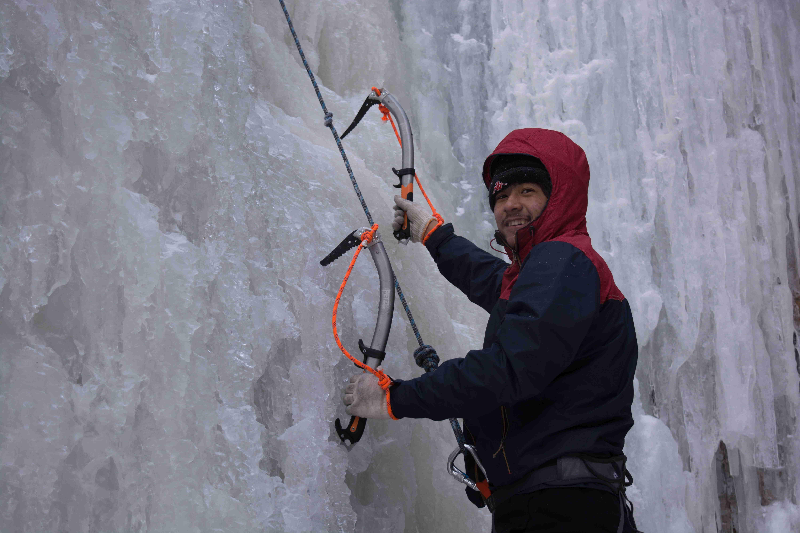

[转寄/推荐][转贴][删除][修改][设置可RE属性][上一篇][返回讨论区][下一篇][回文章][同主题列表][同主题阅读][从这里展开]
发信人: lvganyu (小雨儿), 信区: outdoor
标 题: 【团爆】攀岩队
发信站: 饮水思源 (2016年12月23日19:36:46 星期五)
队长：史万荣
本人纯洁小白一只，跟他们这些整天呜呜呜开火车的火车司机不能比。身为组织部副部长
兼职攀岩队队长，最主要的就是为组织部奉献自己的力量，顺便给攀岩队挂挂绳，指导一
些训练什么的……为人和善，笑起来“很靠谱”——被很多人这样说过，确实是一个蛮靠
谱的人，不过比较懒，所以……平时比较喜欢沉默，不过这一般是没有打开话匣子，一旦
找到能聊得来的，就滔滔不绝一泄千里了…希望大家都能喜欢我…目前单身不可撩…就酱
了
 screen.width - 200){this.width = screen.width - 200}">
|
[转寄/推荐][转贴][删除][修改][设置可RE属性][上一篇][返回讨论区][下一篇][回文章][同主题列表][同主题阅读][从这里展开]